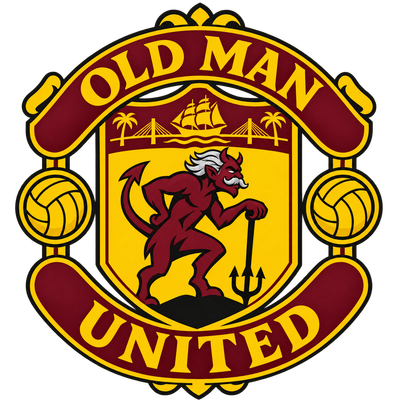

THE TEAM. THE NUMBERS.
Old Man United.
Wednesday Men's 30+ · St. Pete
Connecting to the team sheet…
Season at a glance
GOALS SCORED THIS SEASON
Golden Boot 🏆
Tied on goals? Share the place.
EVERY MATCH COUNTS
Results
THE SQUAD
Player stats
| Player | Goals | Clean sheets |
|---|